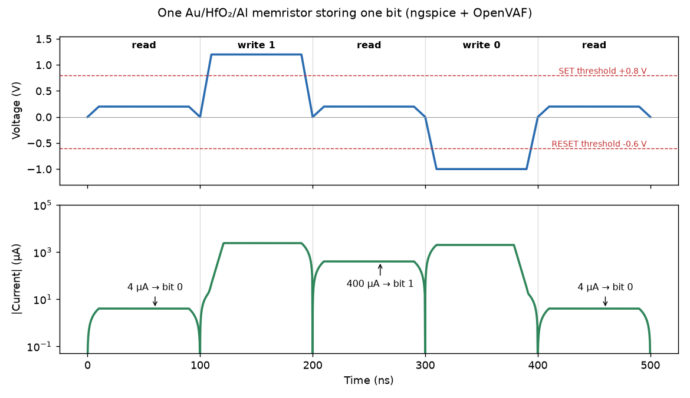

Write a 1 into the Au/HfO₂/Al memristor, read it back and erase it, then find out why a write that is too weak does nothing. You only ever need to click whatever is inside the red box, or type exactly what is in a black box.
click hereClick any screenshot to see it full sizeKeys in the player: ←→SpaceEsc
The idea
One memristor, one bit
Computers store everything as bits, zeros and ones. A memristor can hold a bit without any power, because its resistance stays where you left it. That is the whole "digital side" of a memristor: it is a tiny memory cell that keeps its data with the power off, the idea behind RRAM (resistive RAM).
1
Bit 0 and bit 1
bit 1
The memristor is on: low resistance (Ron), a lot of current flows.
bit 0
The memristor is off: high resistance (Roff), very little current flows.
write 1 (SET)
A short, big positive voltage pulse switches it on.
write 0 (RESET)
A short, big negative pulse switches it off.
read
A small voltage, too small to switch anything. Measure the current: big means 1, small means 0.
Why the HfO₂ memristorThe Au/HfO₂/Al memristor from Add a new device only changes above +0.8 V or below −0.6 V. So a 0.2 V read can never change the bit by accident.
About 5 minutes
Store a bit and read it back
A ready-made testbench writes a 1 into the memristor, reads it, writes a 0 and reads again. You'll run it and read the bit from the numbers ngspice prints.
2
Open the Library Manager
Click the Library Manager tab.
3
Pick the library
Click openmemristorpdk_pr in the Libraries list.
4
Pick the bit testbench
Click memristor_hfo2_al_bit_tb in the Cells list. tb is short for testbench: a circuit made only to try a device.
5
Open it in xschem
On the Schematic row, click Open in xschem.
6
The testbench
xschem shows the circuit: the memristor on the left, the voltage source V1 on the right (box 1), and the code block below. Box 2 holds the two write voltages.
Time
V1 gives
What it does
0–100 ns
0.2 V
read 1: what is stored at the start?
100–200 ns
vset = 1.2 V
write a 1 (SET)
200–300 ns
0.2 V
read 2
300–400 ns
vreset = −1.0 V
write a 0 (RESET)
400–500 ns
0.2 V
read 3
pwl(...)
Piece-wise linear: a list of time–voltage pairs, joined by straight lines. 110n {vset} means "at 110 ns, be at vset".
ns
Nanosecond, a billionth of a second. The whole test takes half a microsecond.
x0=0
The memristor starts fully off, so the first read should say 0.
meas ... avg
Measures the average current during each read: read1, read2, read3.
7
Click Netlist
Click Netlist, top-right of the menu bar.
8
Click Simulate
Click Simulate and wait about 10 seconds.
9
Two plots and the console
Two plot windows open on the right, plus the ngspice window in the middle. The next three steps look at each one.
10
The voltage
The bottom plot shows what V1 does: three low steps (the reads) and two tall ones, up for the write 1 and down for the write 0.
11
The current
The top plot shows the current through the memristor, in mA.
How to read itRead 1 (0–100 ns): almost no current. The memristor is off.Write 1: the current jumps to 2.4 mA as the memristor turns on.Read 2: 0.4 mA. Same small read voltage as read 1, a hundred times more current: the memristor is now on.Write 0: a short dip, then almost nothing as it turns off again.Read 3: almost no current. Back to off.

The same run with the current on a log scale, where each line is ten times the one below: now the small reads show up too (4 µA, 400 µA, 4 µA).
12
Read the bit
Look at the end of the ngspice window: the three reads, in µA (microamps, millionths of an amp).
The ruleMore than 100 µA means 1, less means 0. So the bit was 0 at the start, 1 after writing a 1, and 0 again after writing a 0. Between the pulses the voltage was 0 and nothing changed: the memristor remembered.
13
Close the current plot
Click Quit in the top plot window.
14
Close the voltage plot
Now the other plot window is in front. Click its Quit.
15
Close the simulator
Click inside the white ngspice window, type quit and press Enter. Keep xschem open for the next part.
About 5 minutes
A write that is too weak
The memristor only switches on above +0.8 V. What happens if the write pulse is only 0.7 V? Change one number and find out.
16
Edit the code block
Double-click on the text of the code block, at the bottom of xschem.
17
The vset line
The Edit Properties box opens with the whole code block. The line to change is .param vset = 1.2.
18
Go to the end of the line
Click anywhere on the vset line, then press End. The cursor jumps to just after 1.2.
19
Type 0.7
Press Backspace three times to delete 1.2, type 0.7 (box 1), then click OK (box 2).
20
Netlist, then Simulate
Click Netlist (1), then Simulate (2), and wait about 10 seconds.
21
The new result
The same windows open again. The voltage plot now only reaches 0.7 V during the write 1.
22
No switching
Look at the current plot. Its scale is now in µA, not mA: the current stays tiny all the time.
What happened0.7 V is below the +0.8 V threshold, so the memristor never switched on. It stayed a plain 50 kΩ resistor.14 µA during the write is just Ohm's law: 0.7 V ÷ 50 000 Ω. Read 2 is 4 µA, the same as read 1.
23
All reads say 0
The ngspice window confirms it: 4 µA, 4 µA, 4 µA. The write failed, so the bit stayed 0.
Why this mattersReal memory chips must write with enough voltage, but they also must read with a small enough one. The gap between the two (0.2 V for reading, more than 0.8 V for writing) is what makes the memory safe.
Try itBefore closing, try other values: vset = 0.9 still writes a 1 (it switches more slowly); vreset = -0.5 can't erase it. Each time: Edit, Netlist, Simulate, then close the plots and ngspice.
24
Close the plots and the simulator
Same as steps 13–15: Quit in the top plot, Quit in the other one, then quit in the ngspice window.
25
Close xschem
Click the X at the top-right of the xschem window.
26
Don't save
xschem asks about UNSAVED data, because you changed vset. Click OK to close without saving: the testbench keeps vset = 1.2 for next time.